最近我花了一些时间研究 GPT Plus / Pro 代充、CDK、卡台、AI API 中转站，以及一些相关的开源项目。
一开始，我以为这只是一个很简单的生意：
用户付钱，商家帮用户开通会员，然后赚一点差价。
但越往下研究，越发现事情没有这么简单。
一个表面上只有”付款 → 输入卡密 → 提交账号信息 → 等几分钟 → Plus 到账”的页面，背后可能已经存在一条完整的数字服务供应链：
用户
↓
零售商
↓
商城 / CDK
↓
任务调度系统
↓
上游 API
↓
卡台 / 资源供应商
↓
支付资源
↓
OpenAI / Apple / 其他官方平台
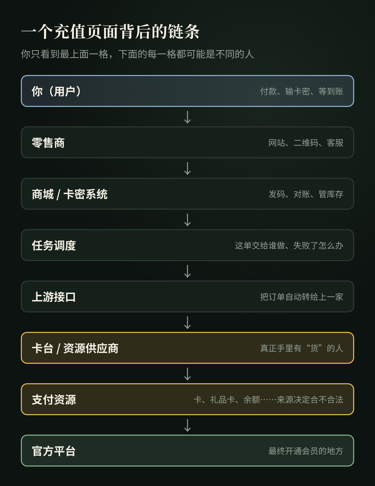
而如果把视野从 GPT 代充扩大到 AI API 中转站，会发现两者底层逻辑极其相似。
它们卖的表面上是 ChatGPT Plus、Claude 订阅、API Token、API Key、模型调用额度。
但从系统和商业角度看，它们真正交易的是同一种东西：
可以被标准化、调度、计费和再次分销的数字服务履约能力。
这篇文章试着把这件事彻底拆开。
本文只讨论产业结构、公开技术和商业逻辑，不涉及绕过安全控制、盗取账号、支付欺诈等操作方法，也不提供任何购买或充值渠道。
一、我为什么会研究这个
第一，我自己就在这个圈子里。
我每天都要用 AI 干活，订阅、API 调用，每个月都是一笔固定开销。要是真有更便宜、又靠谱的渠道，我自己就能省一笔钱。
第二，网上太多人在说：这行真真真太赚钱了。
晒截图的、晒流水的、拉群招代理的，到处都是。
赚到大钱的那批人确实存在，但基本都是入场早、执行快的。现在从 0 开始，可能也能赚，但没那么夸张了。
所以我更想搞清楚一件事：
别人说的”赚钱”，到底是他真的在赚钱，还是在赚你的中介费？
外行也能做的一道估算题
不需要任何内部数据，用公开能看到的信息就能粗算。
第一步：先看他靠什么赚钱。
- 如果他真的在卖货、交货，收入来自一单一单的差价；
- 如果他主要在卖课、招代理、收加盟费，那他赚的，很可能就是你的入场费。
还记得那句老话吗：如果教人赚钱的方法真能赚钱，他自己去用就好了，何必收费教你？
**第二步：估单量。**看店铺页面上的”已售""月销”，或者评价的数量。留评价的只是一部分买家，实际订单只会比评价多。
**第三步：算流水。**单量 × 客单价。
**第四步：算毛利。**每单售价 − 上游成本。不同卖家之间的报价差，基本就是上一层的利润空间。
**第五步：再打个折。**退款、售后、被封号、上游跑路，都会吃掉利润。
第六步：拿结果对照他晒的收入。
举个假设的例子（数字是我编的，只为演示算法）：
一家店月销 3000 单，客单价 140 元，月流水约 42 万；
每单毛利 20 元，毛利约 6 万；
扣掉退款、售后和损耗，按八折算，实际到手大概 5 万左右。
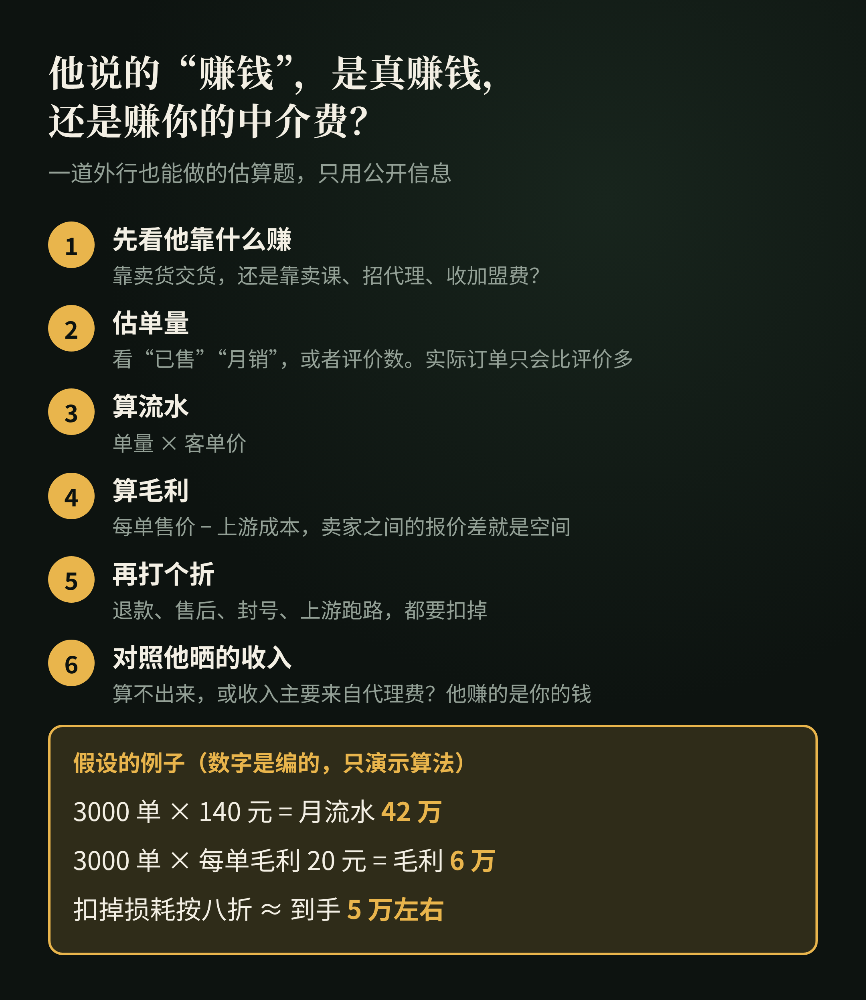
如果一个人号称”月入 30 万”，但你按这个方法怎么算都算不出来；或者他的收入主要来自”代理费""课程费”，那答案就很清楚了：他赚的不是这门生意的钱，是你的钱。
带着这个问题往下研究，我发现了一条比想象中长得多的链。
二、先不要研究”怎么充”，先问：到底卖的是什么？
GPT 相关第三方服务，至少可以分成三类。
1. 成品账号
商家提前准备好一个已经开通会员的 ChatGPT 账号，然后把账号整体卖给用户。
这种模式里：账号 + 会员 = 商品。
用户购买的实际上不是自己原账号的升级，而是另外一个账号。
2. 共享账号 / API 中转
商家拥有 API、订阅账号或其他模型资源，再搭一个自己的入口。
用户购买的是调用额度，而不是自己的 ChatGPT 账号真正变成 Plus。
典型形式包括：
- API 中转站
- Web 聊天站
- 多模型聚合平台
- Claude / GPT / Gemini 统一接口
3. 原号代充
用户已经拥有自己的 ChatGPT 账号。商家需要完成的是：让用户自己的账号获得 Plus / Pro 权益。
这里就出现了整个问题最关键的两个变量：
给谁？ 和 谁付款？
也就是 Identity + Payment，身份与支付。
理解这两个词，后面所有 CDK、Session、卡池、卡台、API 都会变得清楚。
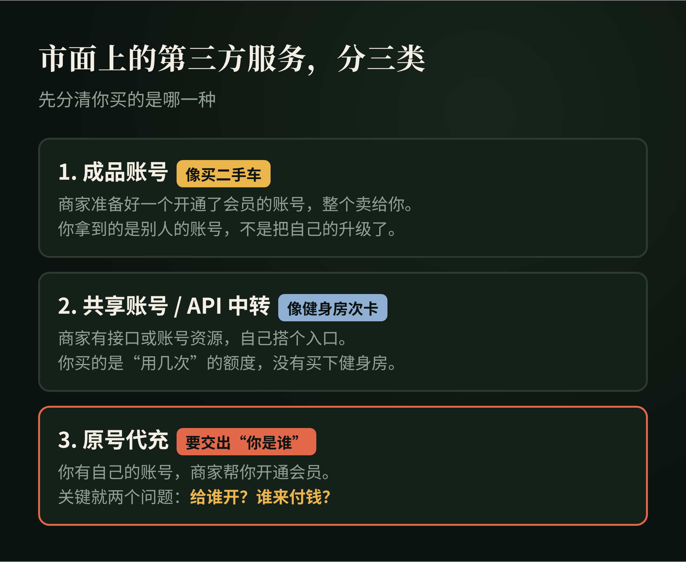
三、CDK 到底是什么？
CDK 是 CD-Key 的缩写，原指早年游戏光盘上的序列号，现在泛指卡密、激活码、兑换码、提货码。
例如：PLUS-A8F2-K91X
很多人第一次看到，会自然认为：这是 OpenAI 官方发行的一张 GPT Plus 礼品卡。
实际上，大量第三方代充系统里的 CDK 并不是官方兑换码。它只是商家自己的数据库认可的一串字符串：
CDK: PLUS-A8F2-K91X
SKU: ChatGPT Plus
Quantity: 1
Status: unused
用户提交以后，商家的系统检查：这张码是否存在？是否已经使用？对应哪个商品？是否允许开始履约？
所以 CDK 真正解决的是：
- 对账；
- 防止重复兑换；
- 商品库存；
- 代理分销；
- 把”付款”和”真正交付”拆开。
它甚至不是整个系统必需的。完全可以”用户付款 → 订单号 → 直接开始履约”，而不经过 CDK。
据我了解，这类 CDK 基本都是零售商自己发行的内部提货凭证，而不是 OpenAI、Apple 或 Stripe 认识的官方激活码。
一个最简单的比喻
假设我是小学生。我在纸上随便写 83957291，然后告诉班里的人：
谁拿这张纸来找我，我就帮他充 30 元 Q 币。
小明、小胖帮我把这张纸卖出去。
那么 83957291 本身有没有价值？没有。
它的价值来自：
我是否承诺认这串数字，并且有能力履约。
如果哪天我转学了，83957291 就只剩一串数字。拿着它去找腾讯，腾讯不会知道它是什么。
这就是绝大多数第三方 CDK 最核心的属性：
它是信用凭证，不是底层资产。
兑换失败了，谁来负责？
把”付钱”和”交货”拆开，对商家很方便，对你却多了一层风险。
假设你在一家店买了卡密，兑换时失败了。你找店家，店家说”上游出问题了，等等”；再过几天，店家说”上游跑路了”。
这时你手里只剩一串字符，而这串字符，只有那家店认。
就像你买了一张理发店的储值卡，结果店关门了。卡还在你手里，但没人认了。
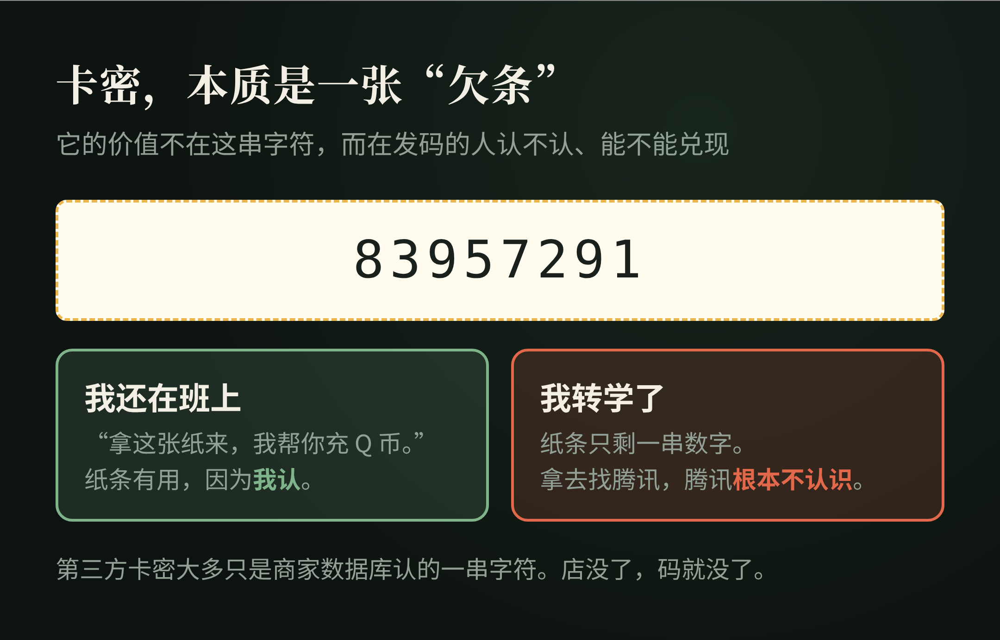
四、Session：不是钱，而是”你是谁”
原号代充里，比 CDK 更重要的是 Session。
Session 可以粗略理解成：
一个已经登录状态下的会话身份凭证。
它解决的问题不是”钱从哪里来”，而是：
“这笔操作对应哪个 ChatGPT 用户？”
因此可以把两个概念分开：
Session → Who? → 给谁？
Card / Apple → Paid? → 谁来付款？
据我了解，这类系统里，这两类信息是明确分开的：一类是 ChatGPT 身份，一类是支付身份。
这也是为什么原号代充的风险，比普通买一个兑换码高：你交出去的可能不是一个普通订单号，而是具有账号身份意义的认证信息。
截至 2026 年 10 月，OpenAI 个人使用条款写明，用户不得共享账号凭证，也不得把账号提供给其他人使用；OpenAI 的账户共享政策同样指出，账号供创建者本人使用。
所以这里需要区分两个问题：
技术上能不能实现，和 是否符合平台规则。
这是完全不同的事情。
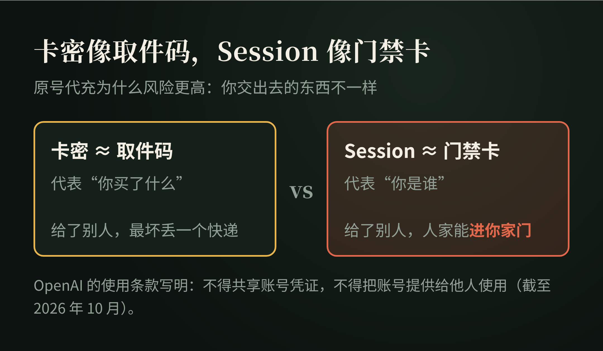
五、真正的”货”是什么？
研究到这里，会出现一个很有意思的问题。
如果 CDK 不是货，Session 不是货，网站也不是货，那么代充商真正卖的到底是什么？
答案是：
履约能力（Fulfillment）。
也就是：收到订单以后，最终真正把商品或权益交付出去的能力。
例如一家上游对下游说：
你给我：
ChatGPT 用户身份 + Plus 套餐 + 一笔费用
我给你：
success / failed
那么下游真正采购的是：
“把某个账号变成某种套餐”的服务能力。
而不是某个神秘字符串。
这一步理解以后，“卡台”这个词也就变得简单了。
六、什么是”卡台”？
“卡台”不是一个严格的软件工程术语，更像行业俗称。
在代充供应链中，可以把它理解为：
掌握某种真实支付资源或订阅履约能力的上游供应商。
它可能拥有：
- 可正常完成支付的银行卡资源；
- Apple ID / App Store 支付资源；
- 合法礼品卡余额；
- 不同地区的支付能力；
- 上一级供应商账户；
- 自动化执行环境；
- 一套自己的订单 API。
因此，零售商向卡台采购的不是”一张银行卡”，而是：
一次成功履约的能力。
据我了解，卡台就是真正持有订阅履约资源的那一层，零售商向它买的是把目标账号升级为某个套餐的能力。
七、卡池又是什么？
卡池，英文可以理解为 Card Pool。
它不是发卡平台，更不是”一个可以凭空生成 Visa 卡的网站”。
它只是：
一组已经存在的支付卡资源，由系统记录状态、分配使用。
公开项目 KC-PAY-GPT（github.com/KC-CatK/KC-PAY-GPT，2026-10 查看）就包含卡池管理、浏览器池、支付重试、Stripe Checkout 自动化等模块，其项目目录中可以直接看到 stripe-payment.js、browser-pool.js、payment-retry.js、session-auth.js 等文件。
但是：
拥有卡池管理程序，不等于拥有发卡能力。
真正发行一张 Visa / Mastercard，需要合法的金融发行体系。所以：
Card Pool ≠ Issuer
这里的 Issuer 指发卡机构。
软件可以管理卡。软件不能凭空创造一张真正能够完成清算的银行卡。
这一点非常重要。卡从哪里来，决定了整条链是正常生意还是违法行为。
八、KC-PAY-GPT：一个很好的”调度层”样本
KC-PAY-GPT 是研究这套产业链时非常有代表性的公开项目。
它的意义并不是”GitHub 上有人开源了一个制造 GPT Plus 的程序”，而是：
它公开展示了数字服务履约系统的中间层是如何组织的。
项目公开结构里同时存在：CDK、Session、任务调度、数据库、卡池、浏览器池、支付重试、第三方 API。
它的角色更接近：
用户
│
CDK + Session
│
▼
┌──────────────┐
│ KC-PAY-GPT │
│ 订单 / 身份 │
│ 任务 / 状态 │
└──────┬───────┘
│
┌─────────┴─────────┐
▼ ▼
本地执行 上游 API
│ │
支付资源 │
└─────────┬─────────┘
▼
官方系统
这里出现了一个非常重要的商业现象：
零售商甚至不需要拥有真正的支付资源。
它只需要：收用户的钱 → 收到订单 → 通过 API 提交给上游 → 等待 success / failed。
据我了解，这就是所谓的”调度层”：零售商可以完全不拥有真正的支付能力，只需要把订单交给卡台。
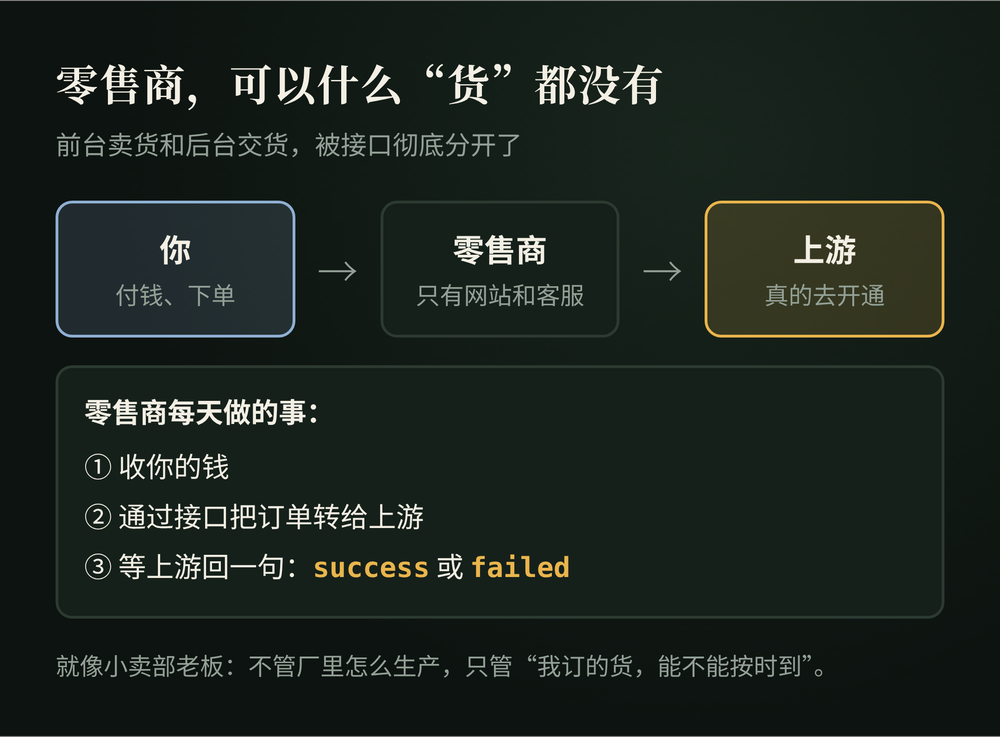
九、API 为什么是这条产业链最重要的放大器？
API 全称 Application Programming Interface，应用程序编程接口。
最重要的作用是：
让两个软件自动说话。
上游只需要提供几个接口：获取商品、查询余额、创建订单、查询订单。
下游就可以自己建立网站、品牌、价格、支付、客户。
用户的钱进入下游，下游再自动从上游采购。于是，前台销售和后台履约彻底分开。
这就是现代数字商品分销非常核心的结构，也是上一节”零售商不需要拥有支付资源”能成立的原因。
十、然后我发现：AI API 中转站其实是同一门生意
研究完代充，再去看 AI API 中转站，会发现两者的结构几乎一模一样。
所谓中转站，可以粗略理解为：
用户不直接连接模型提供商，而是先连接一个中间 Gateway。
用户
↓
API Gateway
↓
OpenAI / Anthropic / Google / AWS / Azure ...
用户一般只获得两个东西：Base URL + API Key。
Base URL 是什么？
API 请求发往哪里的基础地址，例如 https://example.com/v1。
客户端把请求发过去。至于 Gateway 后面真正连接的是 OpenAI、Claude、Gemini、Azure 还是 AWS，客户端可能根本不知道。
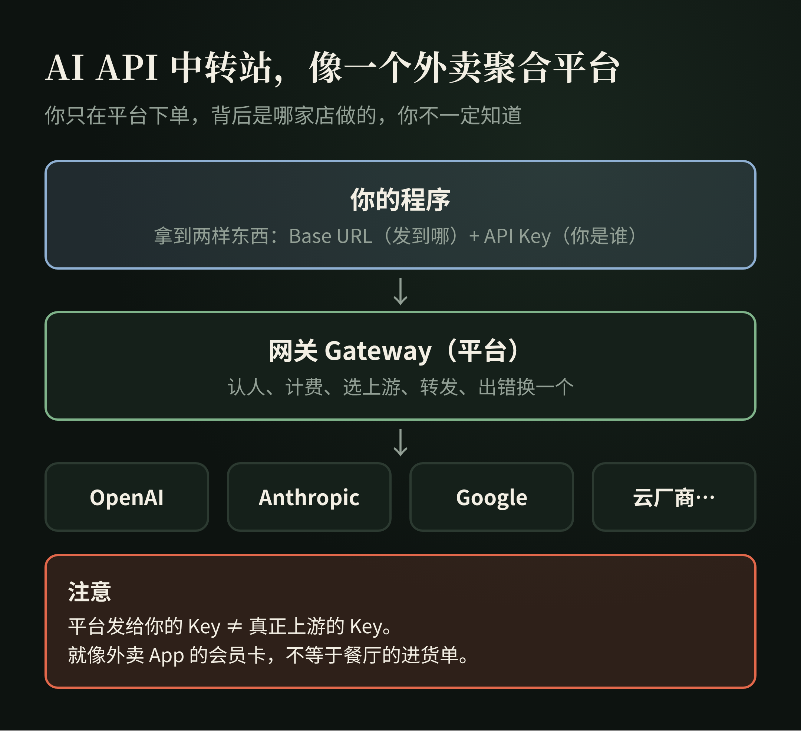
API Key 是什么？
调用 API 的身份凭证。它告诉 Gateway：你是谁、剩多少余额、允许调用什么模型、该怎么计费。
注意：用户拿到的 API Key，不一定等于真正模型供应商的 API Key。
中转站完全可以自己生成一个 Key 给用户，内部再映射到自己的上游资源。
十一、API Gateway 才是”中转站”的技术核心
Gateway 的意思是网关。
一个成熟的 AI Gateway 通常负责：鉴权、计费、路由、限流、额度、日志、负载均衡、失败切换、模型映射。
例如经典开源项目 One API（github.com/songquanpeng/one-api），README 里直接写着”可用于 key 管理与二次分发”，支持多个渠道接入、负载均衡、Token 管理、渠道管理、额度管理和用户分组等能力。
New API（github.com/QuantumNous/new-api）则把自己的定位写成：
A unified AI model hub for aggregation & distribution.（统一的 AI 模型枢纽，用于聚合和分发。）
支持把不同的大模型统一转换成 OpenAI、Claude 或 Gemini 兼容的格式。
所以”中转站”真正的技术本质并不神秘：
用户请求 → Gateway → 选择一个上游 → 转发 → 获取结果 → 返回用户
十二、什么是 Key Pool？
和 Card Pool 几乎完全一样。
Key Pool = API Key Pool，一组可以调用上游模型的 API Key。
Gateway 可以根据余额、速率限制、当前压力、模型、可用状态，决定这次请求使用哪个 Key。
因此可以发现一个很有意思的对称关系：
代充产业：订单 → Card Pool → 选择支付资源
API 中转：请求 → Key Pool → 选择模型资源
底层其实是同一种计算机系统思想：
Resource Pooling，资源池化。
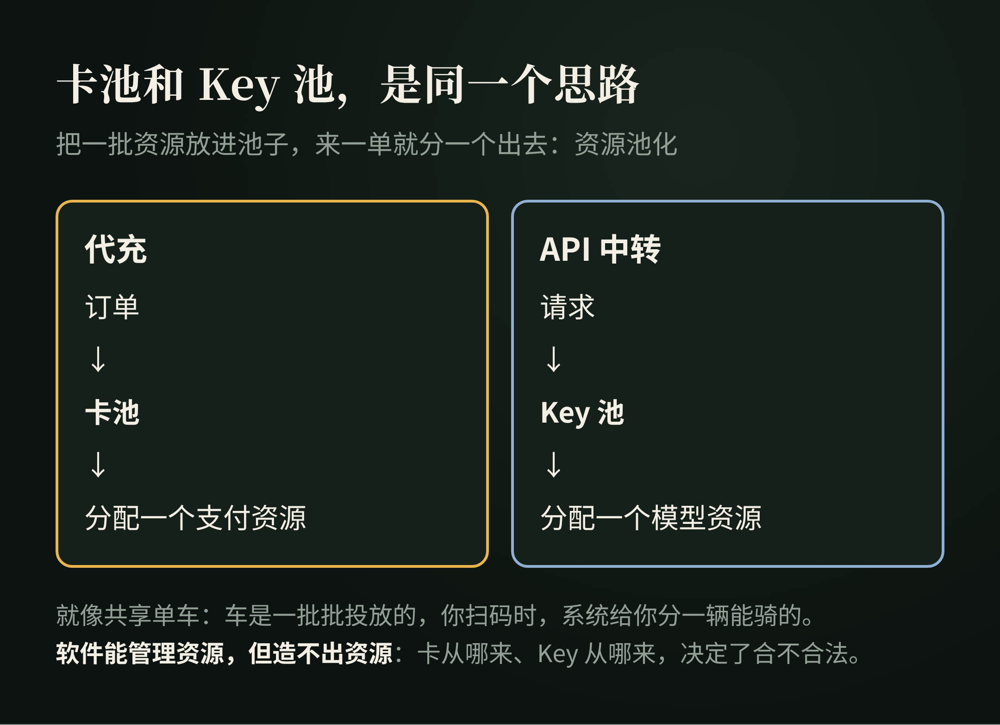
十三、Gateway 的几个基本功：负载均衡、限流、重试
Load Balancing：负载均衡
假设系统有 Key A、Key B、Key C。如果所有流量都打到 A：A 爆掉，B 和 C 闲着，显然不合理。
所以 Gateway 会把请求分散：请求 1 → A，请求 2 → B，请求 3 → C。One API 就支持多个渠道之间的负载均衡。
Rate Limit：速率限制
模型供应商通常不会允许无限高速调用。两个常见指标：
- RPM（Requests Per Minute）：每分钟最多多少个请求；
- TPM（Tokens Per Minute）：每分钟最多处理多少 Token。
当资源达到限制时，系统可能等待、换 Key、换上游，或者稍后重试。
于是又出现几个重要的词：
- Retry：重试；
- Failover：故障转移；
- Queue：任务排队；
- Concurrency：并发数。
十四、Sub2API 又多做了一层什么？
一些更激进的系统，不只是聚合正规 API。它们会尝试：
把某些订阅额度重新包装成 API 能力。
这通常被称为 Subscription-to-API，或者 Sub-to-API / 2API。
公开项目 Sub2API（github.com/Wei-Shaw/sub2api，2026-10 查看）当前把自己描述为：
AI API Gateway Platform for Subscription Quota Distribution
它提供：多账号管理、API Key 分发、Token 级计费、Smart Scheduling、Sticky Session、Concurrency Control、Rate Limiting、Request Forwarding，还内置了支付系统。
项目 README 里自己也写了一条醒目的风险提示：
使用本项目可能违反 Anthropic 等上游服务商的服务条款，所有风险由使用者自行承担。
所以需要再次强调：
技术上存在某种实现，不代表平台允许这种商业用途。
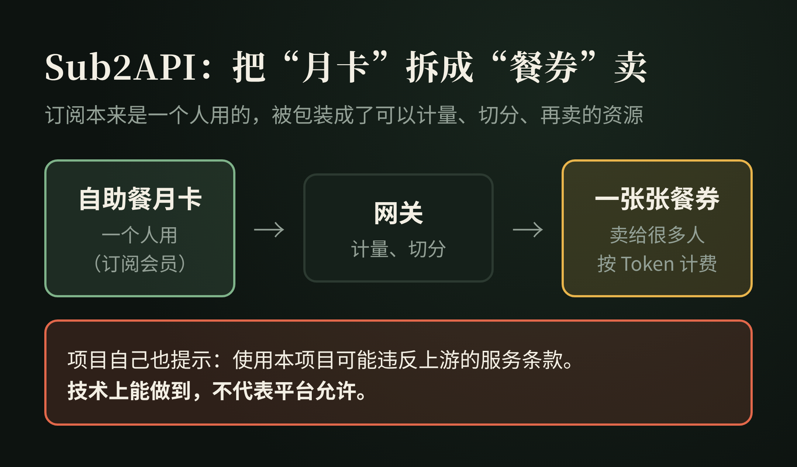
十五、Subscription-to-API 为什么这么有意思？
因为它实际上完成了一次商品形态转换。
原来的商品是 $20 / month subscription：一个用户，使用一个产品。
经过 Gateway 以后，商品被抽象成 API Request、Token、Quota：一个资源，可以计量、可以切片、可以分配、可以再卖。
这个过程非常重要。它就是：
把不可标准化的订阅，重新包装成可计量的数字资源。
这和云计算的思维很像。一整台物理服务器，经过虚拟化，被拆成 CPU、RAM、Storage，再卖给不同用户。
AI 服务的中间层做的某些事情，本质上也类似：
上游能力 → 资源化 → 计量 → 路由 → 分销
十六、所以”中转站”不能只分成正规和山寨
从技术结构看，至少可以分三种。
第一种：正规 API Gateway
官方 API → Gateway → 客户。
Gateway 解决统一接口、计费、路由、监控、多模型管理。这完全可以是一门正常的 SaaS 生意。
第二种：资源池 Gateway
多个 Key / Account → Pool → Gateway → 客户。
核心竞争力变成资源数量、调度能力、可用性、成本。
第三种：非官方协议适配
订阅 / 客户端 → 协议适配 → 统一 API → 用户。
这一类的稳定性和平台规则风险通常都更高。
十七、为什么到处都是”二道贩子”？
不管是代充还是 API 中转，都会出现层层转手。
先看代充。假设真正上游的履约成本是 100 元：
一级供应商：100 → 110
二级代理： 110 → 120
博主： 120 → 139
最终消费者看到的，可能只是一个网站、一个二维码、一个客服。但后台实际上可能已经经过：
消费者 → 博主 → 零售商城 → API 服务商 → 上游卡台 → 支付资源 → 官方
API 中转也一样，因为 API 天然适合继续转 API：
OpenAI / Anthropic → A Gateway → B 中转站 → C 中转站 → 开发者 → 最终用户
只要 成本 < 售价，每一层都可以存在。
为什么每一层都能赚一点？因为每一层都可能提供不同的价值：流量、客服、中文支付、售后、界面、品牌、渠道、API、自动化、真正履约。
所以”二道贩子”并不只是某种道德描述。从商业上看，它本质上就是：
Reseller，分销商。
很多传统产业链本来就是这样运行的。
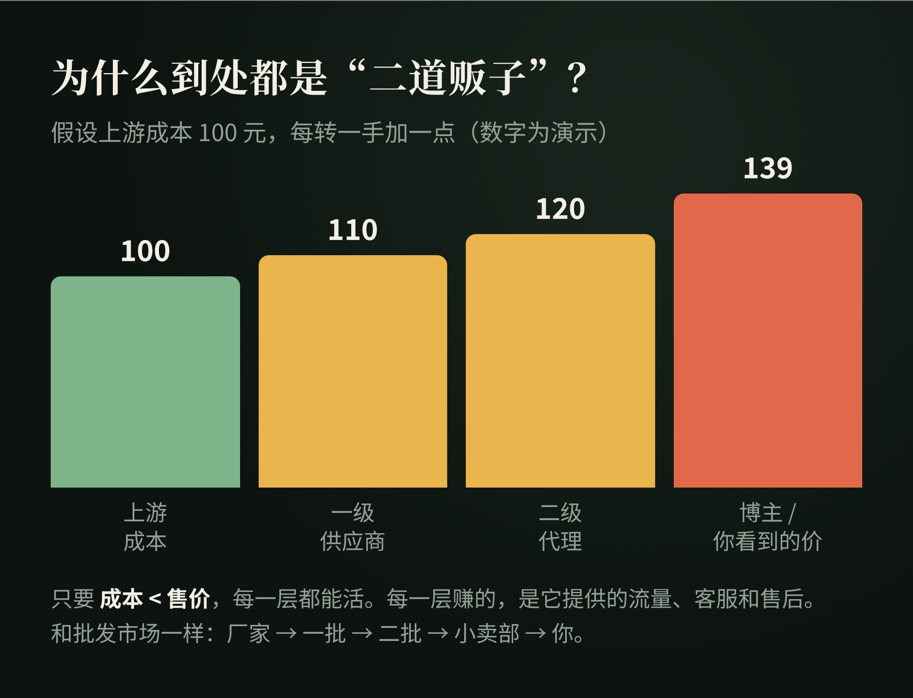
这也意味着：你看到不同的网站、不同的品牌、不同的充值页面，背后并不一定是不同的真实资源，它们可能最终汇聚到同一个上游。
十八、所谓”官转、满血、阉割、降智”到底是什么意思？
这些词大部分不是严格的技术术语，而是行业黑话。
官转
通常指上游仍然使用正规官方 API。
但”官转”不是经过官方认证的标准术语。商家说自己”纯官转”，不能自动证明资源来源。
满血
通常表示没有人为降低模型能力，比如没有换模型、砍上下文、限制工具、额外注入 Prompt。
同样，这是营销和社区语言，不是正式的技术等级。
阉割
通常表示用户获得的实际能力低于宣传的模型能力，可能表现为上下文缩水、功能缺失、参数限制。
Model Swap
模型替换。例如用户以为请求的是 Model A，实际被路由到了 Model B。
这也是中转平台非常重要的信任问题。
用户一般是怎么察觉的？
模型被换了，商家一般不会告诉你。用户往往是从一些”不对劲”里感觉出来的：
- 同样的问题，回答风格突然变了，或者明显变笨了；
- 稍长一点的对话，前面说过的事它就”忘了”，说明上下文可能被砍了；
- 一些官方版本能用的功能，在这里用不了；
- 同样的用量，扣费对不上。
要注意：直接问模型”你是谁”，并不可靠，因为模型的自我介绍是可以被提示词改掉的。这些迹象只能让你起疑，没法帮你下结论。
十九、为什么”便宜”本身解释不了上游？
研究这些行业时，很容易出现一个错误判断：
价格特别低，一定是黑产。
这不能直接成立。低价格可能来自很多因素：补贴、企业合同、批量价格、地区差异、缓存、不同模型、免费额度、上游促销。
但反过来也一样：
价格便宜，不能证明资源合法。
所以研究一个供应链时，比价格更重要的问题是：
它的资源到底从哪里来？
二十、钱和资源到底从哪里来？
这是研究到最后，我认为最重要的问题。
对于代充：卡从哪里来？Apple 余额从哪里来？礼品卡从哪里来？付款资金从哪里来？
对于 API 中转：API Key 从哪里来？账号从哪里来？额度从哪里来？为什么能以这个价格长期供应？
这里才真正决定了：合法性、稳定性、长期性、风险、利润。
而不是网站 UI 好不好看、代码是不是开源。
二十一、这条产业链一定包含黑灰产吗？
不一定。
分销本身完全可以是正常的商业模式：官方 → 授权渠道 → 经销商 → 用户。大量传统行业都是这种结构。
AI Gateway 本身也是正常的软件基础设施。企业内部完全可能合法使用 Gateway，来统一管理 OpenAI、Anthropic、Bedrock、Vertex、Azure。New API 的 README 也写明：本项目仅用于合法、经授权的 AI API 网关、组织级认证、多模型管理、用量分析、成本核算和私有部署场景；用户必须合法获取上游的 Key、账号和服务，并遵守上游服务条款和法律法规。
真正决定性质的是：
身份、支付、额度和账号资源，是否来自合法授权。
风险较高的情况通常包括：盗刷、盗号、窃取凭证、未经授权共享账户、支付欺诈、恶意退款、绕过访问控制。
所以不能简单写成”GPT 代充 = 黑产”。更准确的是：
这是一条第三方数字服务供应链，其中既可能存在正常的代理和技术服务，也可能混入未经授权甚至违法的支付、账号和身份资源。
二十二、用户视角：怎么判断靠不靠谱？
这一节不告诉你去哪买，只告诉你遇到时，可以先问自己几个问题。
1. 这个卡密是谁发的？
是官方礼品卡，还是商家自己数据库里的码？如果是后者，它的价值就完全取决于这家店能撑多久。
2. 要不要交出登录凭证？
只要要求你提供账号密码、登录状态或者类似的凭证，就要格外小心。你交出去的是”门禁卡”。
3. 出了问题找谁？
有没有明确的售后规则？失败了能不能退？退款要等多久？如果对方只有一个微信号，跑了就真的找不到人。
4. 价格是不是低得离谱？
便宜不一定有问题，但低得离谱时，就要多问一句：它的资源，凭什么能长期这么便宜？
5. 宣传的”官转""满血”，你能验证吗？
大多数时候不能。这些词只是宣传语，不是保证。
6. 你一次充了多少？
预付越多、时间越长，风险越大。按月、少量，比一次性充一年稳得多。
这六个问题，回答越多”不知道”，风险就越高。
二十三、普通人最该知道的风险：钱
如果你是买家，或者想做其中的一环，最大的风险永远是资金。
只要不是一个人、或者自己的团队把所有环节都解决，在卡台这个资金环节，就一定存在风险。
无论你做几手中介，还是直接对接卡台，都要先把钱垫给别人。对方随时可能跑路。
这里特别强调：这是危险，而且是极其危险的。
二十四、把整个系统抽象成七层
研究到这里，可以把代充、中转、卡密、API 全部放进同一个模型。为了好记，每一层都拿”点一杯外卖奶茶”来对照。
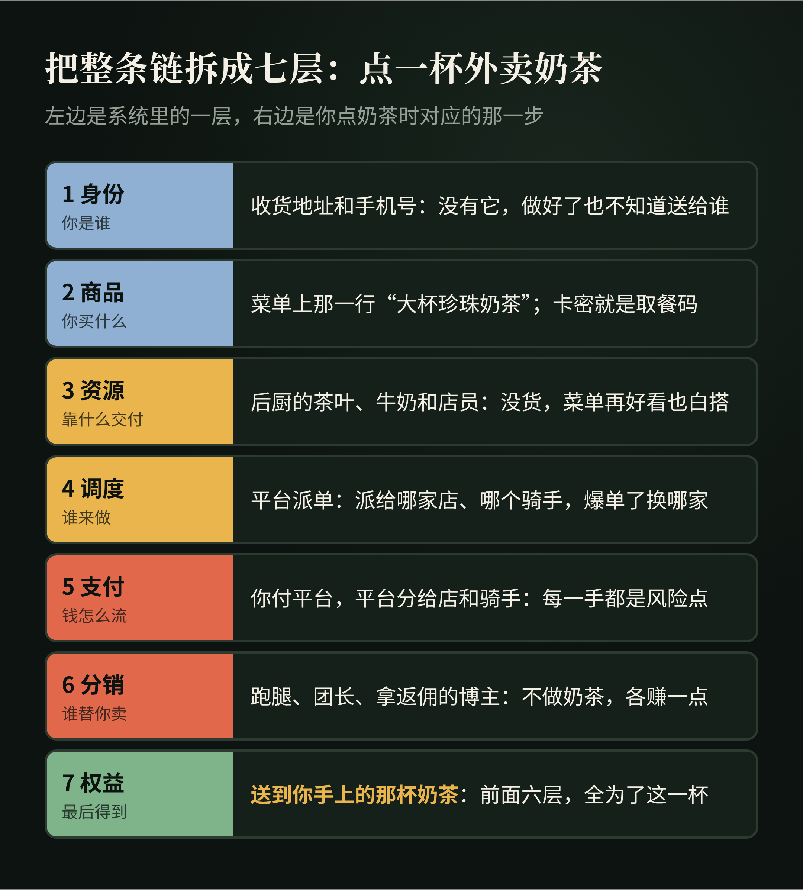
第一层：Identity，身份层
解决”你是谁”。包括 Session、OAuth、API Key、Account。
比喻：收货地址和手机号：没有它，奶茶做好了也不知道送给谁。
第二层：Product，商品层
解决”你购买什么”。例如 CDK、Plus、Pro、API Quota、SKU。
SKU 是 Stock Keeping Unit，库存单位。数字商品同样可以有 SKU。
比喻：菜单上那一行”大杯珍珠奶茶，少冰”；卡密就像取餐码，代表你买了这一行，但它本身不是奶茶。
第三层：Resource，资源层
真正能够完成任务的东西。例如银行卡、Apple 支付资源、API Key、账号、模型额度。
比喻：后厨的茶叶、牛奶和店员：没货，菜单写得再好看也做不出来。
第四层：Orchestration，调度层
负责：哪个订单使用哪个资源、什么时候执行、失败怎么办。
典型概念：Pool、Queue、Routing、Load Balancing、Retry、Failover、Concurrency。
比喻：平台的派单系统：这单派给哪家店、哪个骑手，爆单了换哪家，超时了怎么办。
第五层：Payment，支付层
解决”钱如何流动”。包括银行卡、Stripe、Apple、支付宝、微信、USDT、钱包余额。
比喻：你付给平台，平台再分给店家和骑手：钱经过的每一手，都是一个风险点。
第六层：Distribution，分销层
解决”谁替你卖”。包括 Reseller、Affiliate、API、Distributor。
比喻：帮你下单的跑腿、拼单的团长、发券拿返佣的博主：他们不做奶茶，但每人都赚一点。
第七层：Entitlement，权益层
这是最后真正重要的结果。Entitlement = 权益，例如 ChatGPT 账号上的 Plus 权益，或者 API 账号里的 $100 额度。
最终用户真正购买的是：
系统认可的使用权。
比喻：最后送到你手上的那杯奶茶：前面六层，全是为了这一杯。
这七层合起来，就是 Digital Service Supply Chain，数字服务供应链。
外面看到的一张卡密、一个网站、一个 API Key，只是接口。里面真正运行的是：身份、资源、资金、软件、渠道、信用。
二十五、这也解释了为什么真正稀缺的通常不是代码
研究这些开源项目后，一个非常明显的事实是：商城、CDK、订单、API Gateway、用户系统、计费、卡池、Key Pool、队列、负载均衡、任务调度、支付回调，都可以找到成熟实现。
- One API 已经公开提供渠道聚合、Token、额度、负载均衡等完整能力；
- Sub2API 进一步公开了多账号、计费、调度、Sticky Session、并发、Rate Limit、支付；
- KC-PAY-GPT 又展示了 CDK、Session、浏览器池、支付重试、第三方上游 API。
所以真正长期稀缺的，通常不是”我会不会写 API”，而是：
可靠供应、合法资源、低成本、稳定交付、风险控制、用户信任、获客渠道。
用一句话概括：
真正稀缺的并不是自动付款代码，而是支付资源。
二十六、这门生意，现在还值得进吗？
回到开头那个问题：这行到底赚不赚钱？
**早进场的人，确实赚到了。**他们吃到的是信息差：知道的人少，会做的人更少，需求又大，利润自然高。
但从”想到”到”做到”，中间的距离很长。
同样一个机会，有人看到了，第二天就开始找上游、搭网站、拉第一批客户，赚到了一波钱；而同时看到它的其他人，可能到今天还在想”这个能不能做""要不要试试”。
机会是同一个，结果完全不同，差的就是执行力。
现在再从 0 进场，情况已经变了：
- 价格战：做的人多了，差价被一层层压薄；
- 平台风控：上游平台对账号共享、异常支付的打击越来越严，封号就是直接亏损；
- 资金风险：越往下游，越要先垫钱给上游，跑路的风险全在你身上；
- 规则风险：有些做法本身就踩在平台条款，甚至法律的边上。
所以我的结论是：现在从 0 进，可能还能赚，但远没有网上说的那么夸张；而且你承担的风险，比你看到的收益大得多。
研究到这里，我选择了只研究、不下场。
但这趟研究并没有白做，因为它让我看清了另一件事。
二十七、作为独立开发者，我真正学到的是什么？
研究到这里以后，我反而对”自己去做 GPT 代充”这件事兴趣下降了。
但对它背后的基础设施，兴趣增加了。
因为这套结构完全可以脱离代充，用在正常的独立软件业务里：
用户 → 购买软件 → 支付 → 生成 License → 自动交付 → Webhook → 激活
然后再增加 Affiliate：别人帮你推广，系统自动计算佣金。
再进一步，开放 API：其他产品调用你的能力。
于是一个普通软件，就从”我做一个产品，我自己卖”，变成：
产品 + 支付 + 自动交付 + License + API + 分销 + 计费。
也就是：
一套能够自己运行的商业系统。
商业上 1：每一层都自己做，成本比你想的高得多
很多人的第一反应是：中间商都在赚差价，那我全部自己做，不就把差价都赚了？
我粗略算了一下，每一层要付出的代价大概是这样：
| 环节 | 主要成本 | 难在哪 |
|---|---|---|
| 商城、卡密、收款 | 技术：有开源方案，搭起来几天 | 不难，最容易被高估的一环 |
| 对接上游、调度 | 技术：对接、测试、处理各种失败，一两周起 | 上游一改规则就得跟着改 |
| 资源本身（卡台那一层） | 资金 + 合规 | 不是技术问题，是钱和合法性的问题 |
| 客服、售后、退款 | 时间：每天都要有人回消息 | 最耗人，而且停不下来 |
| 风控 | 时间 + 损失：封号、拒付、坏账 | 出一次事，可能几个月白干 |
| 获客 | 时间 + 钱：内容、投放、渠道 | 没人买，前面全白搭 |
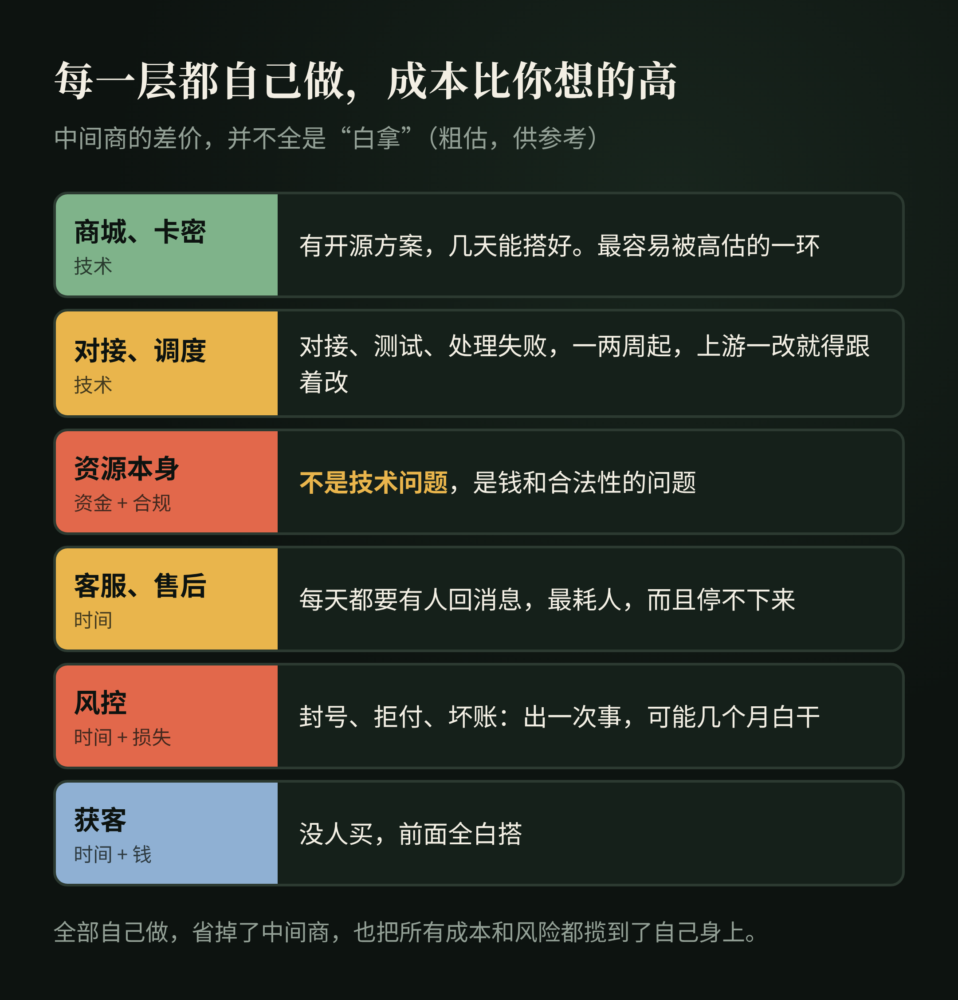
所以中间商赚的差价，并不全是”白拿”。每一层都在替别人承担一部分时间、技术、资金或风险。
全部自己做，你确实省掉了中间商，但也把所有的成本和风险，都揽到了自己身上。
商业上 2：真正稀缺的，是分工里你占哪一环
研究到最后我发现，这条链上活得最好的，不一定是技术最强的，而是在某一环有不可替代优势的：有资源的做上游，有技术的做调度，有流量的做分销。
想清楚自己最强的是哪一环，比”什么都自己干”重要得多。
商业上 3：研究完，我给自己留的四条底线
我也在想：如果哪天我真要自己做点小生意，我会先跟自己约法四章：
- 先有订单，再去拿货：能按单结算就不提前垫钱，垫出去的钱就是风险；
- 要我先交钱才能”拿货”的，一律先打个问号：按开头那道估算题算一遍，他赚的到底是货的钱，还是我的入场费；
- 只做合法、能长期做的东西：踩在规则边上的生意，赚得再快，一次封号、一次跑路就全没了；
- 力气主要花在推广上：货源越来越透明，最后拼的其实是能不能把东西卖出去。
这不是什么成功学，只是我研究完这一条链之后给自己留的底线。真要试，也小成本试；就算试错了，至少能看清自己缺的是货源、技术，还是获客能力。
二十八、独角数卡、One API、KC-PAY-GPT，本质上在解决同一种问题
表面看，它们完全不同：
- 独角数卡：卖数字商品；
- One API：卖 API 额度；
- KC-PAY-GPT：管理订阅履约任务。
但抽象一层以后，都是：
资源 → 标准化 → 生成商品 → 计费 → 分销 → 自动交付
它们全部属于：
数字资源商业化基础设施。
这才是研究这些项目真正值得带走的东西。
二十九、术语速查
| 术语 | 全称 | 一句话理解 |
|---|---|---|
| CDK | CD-Key | 原指游戏光盘序列号，现泛指商家自己的兑换凭证 |
| Session | Session Credential | 当前登录身份凭证 |
| API | Application Programming Interface | 软件与软件之间的接口 |
| API Key | API Key | API 身份和权限凭证 |
| Base URL | Base URL | API 请求发送到哪里的基础地址 |
| Gateway | API Gateway | 统一管理 API 请求的网关 |
| Card Pool | Card Pool | 可调度的支付卡资源池 |
| Key Pool | API Key Pool | 可调度的 API Key 资源池 |
| Account Pool | Account Pool | 可调度的账号资源池 |
| Routing | Request Routing | 决定请求走哪个上游 |
| Load Balancing | Load Balancing | 将流量分配给多个资源 |
| Queue | Queue | 任务排队 |
| Retry | Retry | 失败后重试 |
| Failover | Failover | 上游失败后切换备用资源 |
| Concurrency | Concurrency | 同时处理多少任务 |
| Rate Limit | Rate Limit | 调用速率限制 |
| RPM | Requests Per Minute | 每分钟请求次数 |
| TPM | Tokens Per Minute | 每分钟 Token 数量 |
| Token | Token | 模型处理和计费的基本文本单位 |
| Context Window | Context Window | 模型一次可处理的上下文范围 |
| Streaming | Streaming | 流式返回结果 |
| SSE | Server-Sent Events | 常见的服务器流式推送机制 |
| OAuth | Open Authorization | 第三方授权协议 |
| SKU | Stock Keeping Unit | 商品库存 / 销售单位 |
| Reseller | Reseller | 从上游采购后再次销售 |
| Affiliate | Affiliate | 通过推广获得佣金 |
| Supplier | Supplier | 上游供应商 |
| Fulfillment | Fulfillment | 从订单到真正交付的过程 |
| Entitlement | Entitlement | 用户最终拥有的服务权益 |
| IAP | In-App Purchase | App 内购买 |
| StoreKit | StoreKit | Apple 的 App 内购框架 |
| Transaction | Transaction | 一次正式的交易记录 |
| Webhook | Webhook | 一个系统主动通知另一个系统某事发生 |
| MoR | Merchant of Record | 代表开发者处理销售、支付和部分税务事务的记录商户 |
最后
最开始研究 GPT 代充时，我的问题是：“他们到底怎么把 Plus 充进去？”
后来问题慢慢变成：“为什么一个简单的充值页面后面，会出现这么多代理？”
再后来，我真正感兴趣的问题已经变成：
数字服务究竟如何被商品化？
答案大概就是：
把能力变成资源
↓
把资源变成标准商品
↓
把商品变成 API
↓
让系统自动计费和交付
↓
允许其他人继续分销
所以不论是 GPT Plus、API Token、License、软件、数据、模型还是云计算，很多数字生意最终都会走向同一件事：
把原本复杂、不可直接交易的技术能力，包装成标准化、可计量、可自动交付的商品。
网站只是入口。CDK 只是凭证。API 只是连接器。Gateway 只是调度系统。
真正决定一门数字生意能不能长期成立的，仍然是：
资源从哪里来、有没有真实需求、能否稳定履约、用户是否信任，以及整个供应链是否经得起长期验证。
这才是研究 GPT 代充和 AI API 中转以后，我觉得最值得带走的东西。
想聊聊 AI、独立开发，或者对这类产业链也有研究，欢迎通过 X / @chokebit3xp 交流。